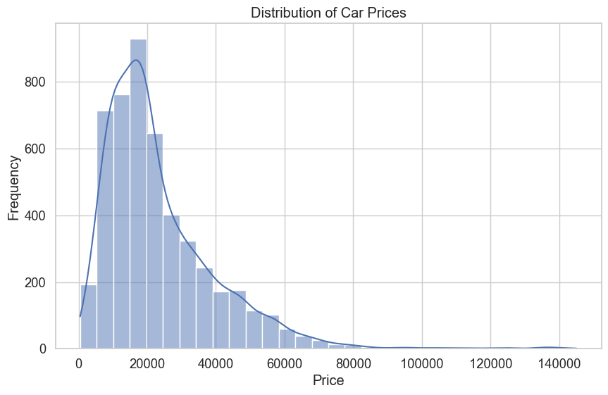
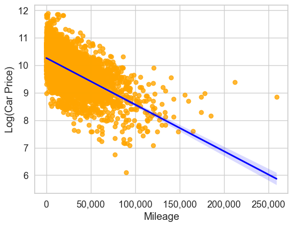
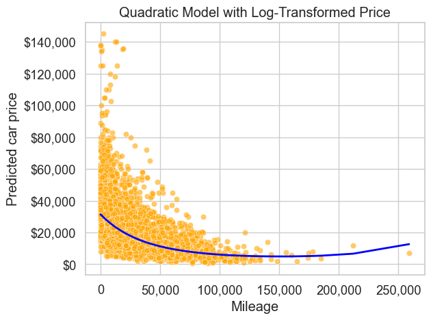
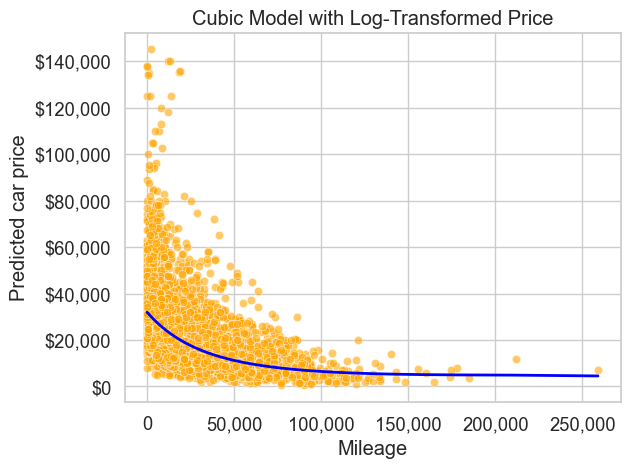

# Import libraries
import pandas as pd
import numpy as np
import statsmodels.formula.api as smf
import seaborn as sns
import matplotlib.pyplot as plt
from sklearn.preprocessing import PolynomialFeatures
from sklearn.linear_model import LinearRegression
from sklearn.metrics import root_mean_squared_error, mean_absolute_error, r2_score
sns.set_theme(style="whitegrid", font_scale=1.2)5 Extending Linear Regression: Feature Transformations
5.1 Learning objectives
By the end of this notebook you should be able to:
- Explain why a log transform of the target (using
log(price)) can be helpful, and correctly back-transform predictions withexp(). - Fit polynomial regression models in
statsmodelsusing the formula API (e.g., quadratic and cubic terms withI(mileage**2)/I(mileage**3)). - Build polynomial feature models in scikit-learn with
PolynomialFeaturesandLinearRegression. - Implement polynomial feature models using a scikit-learn
Pipelinefor a clean, reproducible workflow.
5.2 Feature transformations in statsmodels
5.2.1 Why feature transformations matter
A linear regression model is linear in its coefficients, not necessarily linear in the original variables. That means we can extend a “linear” model to capture many real-world patterns by transforming or expanding the predictors.
Feature transformations are important because they let us:
- Capture nonlinearity while staying in the linear-model framework: adding terms like \(mileage^2\) or \(mileage^3\) can model curved relationships without switching to a completely different model class.
- Improve model assumptions: transforming variables (often the target) can reduce heteroscedasticity (non-constant variance), make residuals closer to normal, and improve linearity of the relationship.
- Enable interpretable extensions: polynomial terms and interactions are still interpretable, especially when you state clearly what was transformed and how predictions are back-transformed.
In this section, we use the same car dataset throughout for continuity.
# Read data
trainf = pd.read_csv('./Datasets/Car_features_train.csv')
trainp = pd.read_csv('./Datasets/Car_prices_train.csv')
testf = pd.read_csv('./Datasets/Car_features_test.csv')
testp = pd.read_csv('./Datasets/Car_prices_test.csv')
train = pd.merge(trainf, trainp)
test = pd.merge(testf, testp)
# Create age feature using the most recent model year in the training data
reference_year = train["year"].max()
train["age"] = reference_year - train["year"]
test["age"] = reference_year - test["year"]
train.head()| carID | brand | model | year | transmission | mileage | fuelType | tax | mpg | engineSize | price | age | |
|---|---|---|---|---|---|---|---|---|---|---|---|---|
| 0 | 18473 | bmw | 6 Series | 2020 | Semi-Auto | 11 | Diesel | 145 | 53.3282 | 3.0 | 37980 | 0 |
| 1 | 15064 | bmw | 6 Series | 2019 | Semi-Auto | 10813 | Diesel | 145 | 53.0430 | 3.0 | 33980 | 1 |
| 2 | 18268 | bmw | 6 Series | 2020 | Semi-Auto | 6 | Diesel | 145 | 53.4379 | 3.0 | 36850 | 0 |
| 3 | 18480 | bmw | 6 Series | 2017 | Semi-Auto | 18895 | Diesel | 145 | 51.5140 | 3.0 | 25998 | 3 |
| 4 | 18492 | bmw | 6 Series | 2015 | Automatic | 62953 | Diesel | 160 | 51.4903 | 3.0 | 18990 | 5 |
train_updated = train[train.transmission != 'Other']Let’s see the distribution of the target price
# draw the distribution of the price
plt.figure(figsize=(10, 6))
sns.histplot(train_updated['price'], bins=30, kde=True)
plt.title('Distribution of Car Prices')
plt.xlabel('Price')
plt.ylabel('Frequency')
plt.show()
The price distribution is right-skewed, indicating that car prices have increasing variance at higher price levels. Linear models work best with normally distributed data and generally perform better when this assumption is met.
Benefits of using log(price) as the dependent variable:
- Reduces Heteroscedasticity: Car prices often have increasing variance at higher price levels; log transformation stabilizes this variance
- Handles Multiplicative Effects: Captures percentage changes rather than absolute changes, which is more natural for price data
- Improves Model Fit: Often leads to better R² values and improved residual behavior
- Interpretability: Coefficients represent percentage changes in price, making economic interpretation more intuitive
Important: When using log-transformed dependent variables, predictions must be transformed back using np.exp() to get actual price predictions.
# R-squared of the model with just mileage (log-transformed price)
# Log transformation helps with heteroscedasticity and non-linear relationships
model_sm_mileage = smf.ols('np.log(price) ~ mileage', data=train_updated).fit()
print(f"R-squared (log price ~ mileage): {model_sm_mileage.rsquared:.4f}")
# Compare with original model without log transformation
model_sm_mileage_orig = smf.ols('price ~ mileage', data=train_updated).fit()
print(f"R-squared (price ~ mileage): {model_sm_mileage_orig.rsquared:.4f}")R-squared (log price ~ mileage): 0.3601
R-squared (price ~ mileage): 0.2293The model’s R² increased from 22% to 36% with the log transformation, but 36% is still relatively low. Let’s explore how we can improve it further by examining the relationship between log-transformed car price and mileage.
# Relationship between log(price) and mileage
ax = sns.regplot(x=train_updated.mileage, y=np.log(train_updated.price), color='orange', line_kws={'color': 'blue'})
plt.xlabel('Mileage')
plt.ylabel('Log(Car Price)')
ax.xaxis.set_major_formatter('{x:,.0f}')
The plot shows a reasonably linear relationship between mileage and log(price), but the R² of 36% suggests there’s still substantial unexplained variation. While the log transformation improved the model from 22% to 36%, we can explore polynomial terms to capture any remaining nonlinear patterns.
5.2.1.1 Quadratic transformation
Add a squared term for mileage using the I() operator to keep it as a separate predictor.
# Quadratic model with log-transformed price
model_sm_quad = smf.ols('np.log(price) ~ mileage + I(mileage**2)', data=train_updated).fit()
print("Log-transformed price with quadratic mileage term:")
print(f"R-squared: {model_sm_quad.rsquared:.4f}")
model_sm_quad.summary()Log-transformed price with quadratic mileage term:
R-squared: 0.3825| Dep. Variable: | np.log(price) | R-squared: | 0.382 |
| Model: | OLS | Adj. R-squared: | 0.382 |
| Method: | Least Squares | F-statistic: | 1535. |
| Date: | Fri, 23 Jan 2026 | Prob (F-statistic): | 0.00 |
| Time: | 09:30:37 | Log-Likelihood: | -4007.5 |
| No. Observations: | 4959 | AIC: | 8021. |
| Df Residuals: | 4956 | BIC: | 8040. |
| Df Model: | 2 | ||
| Covariance Type: | nonrobust |
| coef | std err | t | P>|t| | [0.025 | 0.975] | |
| Intercept | 10.3538 | 0.013 | 803.018 | 0.000 | 10.329 | 10.379 |
| mileage | -2.452e-05 | 6.47e-07 | -37.919 | 0.000 | -2.58e-05 | -2.32e-05 |
| I(mileage ** 2) | 8.112e-11 | 6.06e-12 | 13.385 | 0.000 | 6.92e-11 | 9.3e-11 |
| Omnibus: | 25.307 | Durbin-Watson: | 0.323 |
| Prob(Omnibus): | 0.000 | Jarque-Bera (JB): | 26.219 |
| Skew: | -0.154 | Prob(JB): | 2.03e-06 |
| Kurtosis: | 3.178 | Cond. No. | 4.81e+09 |
Notes:
[1] Standard Errors assume that the covariance matrix of the errors is correctly specified.
[2] The condition number is large, 4.81e+09. This might indicate that there are
strong multicollinearity or other numerical problems.
# Visualize the quadratic fit (transform log predictions back to price scale)
pred_price_log = model_sm_quad.predict(train_updated)
pred_price = np.exp(pred_price_log) # Transform back from log scale
ax = sns.scatterplot(x='mileage', y='price', data=train_updated, color='orange', alpha=0.6)
sns.lineplot(x=train_updated.mileage, y=pred_price, color='blue', linewidth=2)
plt.xlabel('Mileage')
plt.ylabel('Predicted car price')
plt.title('Quadratic Model with Log-Transformed Price')
ax.yaxis.set_major_formatter('${x:,.0f}')
ax.xaxis.set_major_formatter('{x:,.0f}')
plt.show()
5.2.1.2 Cubic transformation
Add a cubic term for additional flexibility.
# Cubic model with log-transformed price
model_sm_cubic = smf.ols('np.log(price) ~ mileage + I(mileage**2) + I(mileage**3)', data=train_updated).fit()
print("Log-transformed price with cubic mileage terms:")
print(f"R-squared: {model_sm_cubic.rsquared:.4f}")
model_sm_cubic.summary()Log-transformed price with cubic mileage terms:
R-squared: 0.3835| Dep. Variable: | np.log(price) | R-squared: | 0.383 |
| Model: | OLS | Adj. R-squared: | 0.383 |
| Method: | Least Squares | F-statistic: | 1027. |
| Date: | Fri, 23 Jan 2026 | Prob (F-statistic): | 0.00 |
| Time: | 09:31:01 | Log-Likelihood: | -4003.4 |
| No. Observations: | 4959 | AIC: | 8015. |
| Df Residuals: | 4955 | BIC: | 8041. |
| Df Model: | 3 | ||
| Covariance Type: | nonrobust |
| coef | std err | t | P>|t| | [0.025 | 0.975] | |
| Intercept | 10.3730 | 0.015 | 714.209 | 0.000 | 10.345 | 10.402 |
| mileage | -2.705e-05 | 1.09e-06 | -24.723 | 0.000 | -2.92e-05 | -2.49e-05 |
| I(mileage ** 2) | 1.328e-10 | 1.9e-11 | 6.985 | 0.000 | 9.55e-11 | 1.7e-10 |
| I(mileage ** 3) | -2.22e-16 | 7.74e-17 | -2.868 | 0.004 | -3.74e-16 | -7.02e-17 |
| Omnibus: | 28.207 | Durbin-Watson: | 0.325 |
| Prob(Omnibus): | 0.000 | Jarque-Bera (JB): | 29.444 |
| Skew: | -0.161 | Prob(JB): | 4.04e-07 |
| Kurtosis: | 3.196 | Cond. No. | 7.73e+14 |
Notes:
[1] Standard Errors assume that the covariance matrix of the errors is correctly specified.
[2] The condition number is large, 7.73e+14. This might indicate that there are
strong multicollinearity or other numerical problems.
# Visualize the cubic fit (transform log predictions back to price scale)
pred_price_log = model_sm_cubic.predict(train_updated)
pred_price = np.exp(pred_price_log) # Transform back from log scale
ax = sns.scatterplot(x='mileage', y='price', data=train_updated, color='orange', alpha=0.6)
sns.lineplot(x=train_updated.mileage, y=pred_price, color='blue', linewidth=2)
plt.xlabel('Mileage')
plt.ylabel('Predicted car price')
plt.title('Cubic Model with Log-Transformed Price')
ax.yaxis.set_major_formatter('${x:,.0f}')
ax.xaxis.set_major_formatter('{x:,.0f}')
plt.show()
Do polynomial transformations work?
Adding polynomial terms yields: - Quadratic model: R² = 38.2% (improvement of 2.2 percentage points) - Cubic model: R² = 38.3% (improvement of 0.1 percentage points over quadratic)
Interpretation: The quadratic term provides a modest improvement (~2 percentage points), suggesting some nonlinearity exists in the mileage-price relationship. However, the cubic term adds almost nothing (0.1%), indicating diminishing returns.
While statistically these improvements may be significant, the practical gain is limited. The quadratic transformation is moderately useful but not transformative. The cubic term appears to be overfitting rather than capturing meaningful patterns. For this dataset, the log transformation itself provides the most substantial improvement, and a simple quadratic term may be sufficient if polynomial features are desired.
5.2.1.3 Putting interaction and transformation together
Combine the interaction term with a quadratic mileage term.
# Full model with interactions and log-transformed price
model_sm_full = smf.ols(
formula='np.log(price) ~ age*engineSize + mileage + I(mileage**2)',
data=train_updated,
).fit()
print("Full model with log-transformed price:")
print(f"R-squared: {model_sm_full.rsquared:.4f}")
model_sm_full.summary()Full model with log-transformed price:
R-squared: 0.7993| Dep. Variable: | np.log(price) | R-squared: | 0.799 |
| Model: | OLS | Adj. R-squared: | 0.799 |
| Method: | Least Squares | F-statistic: | 3944. |
| Date: | Fri, 23 Jan 2026 | Prob (F-statistic): | 0.00 |
| Time: | 11:37:33 | Log-Likelihood: | -1221.1 |
| No. Observations: | 4959 | AIC: | 2454. |
| Df Residuals: | 4953 | BIC: | 2493. |
| Df Model: | 5 | ||
| Covariance Type: | nonrobust |
| coef | std err | t | P>|t| | [0.025 | 0.975] | |
| Intercept | 9.4393 | 0.019 | 496.336 | 0.000 | 9.402 | 9.477 |
| age | -0.1396 | 0.005 | -30.210 | 0.000 | -0.149 | -0.131 |
| engineSize | 0.4634 | 0.008 | 58.287 | 0.000 | 0.448 | 0.479 |
| age:engineSize | 0.0075 | 0.002 | 4.487 | 0.000 | 0.004 | 0.011 |
| mileage | -8.758e-06 | 4.6e-07 | -19.044 | 0.000 | -9.66e-06 | -7.86e-06 |
| I(mileage ** 2) | 3.237e-11 | 3.53e-12 | 9.160 | 0.000 | 2.54e-11 | 3.93e-11 |
| Omnibus: | 456.087 | Durbin-Watson: | 0.491 |
| Prob(Omnibus): | 0.000 | Jarque-Bera (JB): | 1602.553 |
| Skew: | 0.433 | Prob(JB): | 0.00 |
| Kurtosis: | 5.647 | Cond. No. | 1.35e+10 |
Notes:
[1] Standard Errors assume that the covariance matrix of the errors is correctly specified.
[2] The condition number is large, 1.35e+10. This might indicate that there are
strong multicollinearity or other numerical problems.
# RMSE on test data (transform log predictions back to price scale)
pred_price_log = model_sm_full.predict(test)
pred_price = np.exp(pred_price_log) # Transform back from log scale
rmse_full = np.sqrt(((test.price - pred_price) ** 2).mean())
print(f"RMSE on test data (log-transformed model): ${rmse_full:,.2f}")
rmse_log_scale = np.sqrt(((np.log(test.price) - pred_price_log) ** 2).mean())
# For comparison, calculate RMSE in log scale too
print(f"RMSE in log scale: {rmse_log_scale:.4f}")RMSE on test data (log-transformed model): $9,646.67
RMSE in log scale: 0.34255.3 Polynomial Features in scikit-learn (same car dataset)
We keep the same train/test split and use log(price) to match the statsmodels section.
5.3.1 Handling Zero and Negative Values with Log Transformations
The Problem: log(0) is Undefined
In practice, Python returns -inf or throws an error when you try to compute log(0). This is problematic when your data contains zero values.
Solution: log1p() - Best Solution for Most Cases
Use np.log1p(x) which computes log(1 + x):
# Instead of:
y_transformed = np.log(y) # Fails if y contains 0
# Use:
y_transformed = np.log1p(y) # Works even when y = 0Back-transformation:
# To reverse log1p, use expm1:
y_original = np.expm1(y_transformed) # Computes exp(x) - 1Benefits: - Handles zero values naturally: log1p(0) = log(1) = 0 - More numerically stable for small values - Common in financial and count data
Note: For this car price dataset, all prices are positive, so we can safely use np.log() directly.
# Create feature matrix and target vector (log price)
feature_cols = ['mileage', 'engineSize', 'age', 'mpg']
X_train = train_updated[feature_cols]
X_test = test[feature_cols]
y_train = np.log(train_updated['price'])
y_test = np.log(test['price'])
y_train_price = train_updated['price']
y_test_price = test['price']
X_train.head()| mileage | engineSize | age | mpg | |
|---|---|---|---|---|
| 0 | 11 | 3.0 | 0 | 53.3282 |
| 1 | 10813 | 3.0 | 1 | 53.0430 |
| 2 | 6 | 3.0 | 0 | 53.4379 |
| 3 | 18895 | 3.0 | 3 | 51.5140 |
| 4 | 62953 | 3.0 | 5 | 51.4903 |
5.3.2 Train/test split
# We use the provided train/test split from the dataset.
# Show train/test shapes
print("Training set shape:", X_train.shape)
print("Testing set shape:", X_test.shape)Training set shape: (4000, 2)
Testing set shape: (1000, 2)5.3.3 Baseline Model (original Features)
from sklearn.linear_model import LinearRegression
from sklearn.metrics import root_mean_squared_error, r2_score
# Fit a baseline linear regression model on log(price)
baseline_model = LinearRegression()
baseline_model.fit(X_train, y_train)
# Predict on train and test splits (log scale)
y_pred_baseline = baseline_model.predict(X_test)
y_train_pred_baseline = baseline_model.predict(X_train)
# Evaluate on test and training sets (log scale)
rmse_baseline = root_mean_squared_error(y_test, y_pred_baseline)
r2_baseline = r2_score(y_test, y_pred_baseline)
rmse_train_baseline = root_mean_squared_error(y_train, y_train_pred_baseline)
r2_train_baseline = r2_score(y_train, y_train_pred_baseline)
# Back-transform to price scale (see log-trap note above)
pred_price_baseline = np.exp(y_pred_baseline)
rmse_price_baseline = root_mean_squared_error(y_test_price, pred_price_baseline)
print()
print("Baseline Model Performance (log scale):")
print("Training Set:")
print("RMSE:", rmse_train_baseline)
print("R2:", r2_train_baseline)
print()
print("Testing Set:")
print("RMSE:", rmse_baseline)
print("R2:", r2_baseline)
print("RMSE (price scale):", f"${rmse_price_baseline:,.2f}")
Baseline Model Performance (log scale):
Training Set:
RMSE: 0.3126761090785014
R2: 0.7951679756008143
Testing Set:
RMSE: 0.34009843313619664
R2: 0.759217125194597
RMSE (price scale): $9,802.825.3.4 Transform Features with PolynomialFeatures (degree = 2)
from sklearn.preprocessing import PolynomialFeatures
# Create PolynomialFeatures object with degree=2 (includes interaction terms)
poly_2 = PolynomialFeatures(degree=2, include_bias=False)
# Transform the training and testing features
X_train_poly_2 = poly_2.fit_transform(X_train)
X_test_poly_2 = poly_2.transform(X_test)
# Display the transformed feature names
print()
print("Transformed Feature Names:")
print(poly_2.get_feature_names_out())
Transformed Feature Names:
['mileage' 'engineSize' 'age' 'mpg' 'mileage^2' 'mileage engineSize'
'mileage age' 'mileage mpg' 'engineSize^2' 'engineSize age'
'engineSize mpg' 'age^2' 'age mpg' 'mpg^2']5.3.4.1 Linear Model with transformed Features (degree = 2)
# Fit a linear regression model on degree-2 polynomial features (log price)
poly_2_model = LinearRegression()
poly_2_model.fit(X_train_poly_2, y_train)
# Predict on train and test splits (log scale)
y_pred_poly_2 = poly_2_model.predict(X_test_poly_2)
y_train_pred_poly_2 = poly_2_model.predict(X_train_poly_2)
# Evaluate on test and training sets (log scale)
rmse_poly_2 = root_mean_squared_error(y_test, y_pred_poly_2)
r2_poly_2 = r2_score(y_test, y_pred_poly_2)
rmse_train_poly_2 = root_mean_squared_error(y_train, y_train_pred_poly_2)
r2_train_poly_2 = r2_score(y_train, y_train_pred_poly_2)
# Back-transform to price scale (see log-trap note above)
pred_price_poly_2 = np.exp(y_pred_poly_2)
rmse_price_poly_2 = root_mean_squared_error(y_test_price, pred_price_poly_2)
print()
print("Polynomial Model Performance (degree=2, log scale):")
print("Training Set:")
print("RMSE:", rmse_train_poly_2)
print("R2:", r2_train_poly_2)
print()
print("Testing Set:")
print("RMSE:", rmse_poly_2)
print("R2:", r2_poly_2)
print("RMSE (price scale):", f"${rmse_price_poly_2:,.2f}")
Polynomial Model Performance (degree=2, log scale):
Training Set:
RMSE: 0.3002407156431113
R2: 0.8111366745155597
Testing Set:
RMSE: 0.30894008525487293
R2: 0.8013151022053762
RMSE (price scale): $8,479.105.3.5 Transform features with PolynomialFeatures (degree = 3)
# Create PolynomialFeatures object with degree=3
poly_3 = PolynomialFeatures(degree=3, include_bias=False)
# Transform the training and testing features
X_train_poly_3 = poly_3.fit_transform(X_train)
X_test_poly_3 = poly_3.transform(X_test)
# Display the transformed feature names
print()
print("Transformed Feature Names:")
print(poly_3.get_feature_names_out())
Transformed Feature Names:
['mileage' 'engineSize' 'age' 'mpg' 'mileage^2' 'mileage engineSize'
'mileage age' 'mileage mpg' 'engineSize^2' 'engineSize age'
'engineSize mpg' 'age^2' 'age mpg' 'mpg^2' 'mileage^3'
'mileage^2 engineSize' 'mileage^2 age' 'mileage^2 mpg'
'mileage engineSize^2' 'mileage engineSize age' 'mileage engineSize mpg'
'mileage age^2' 'mileage age mpg' 'mileage mpg^2' 'engineSize^3'
'engineSize^2 age' 'engineSize^2 mpg' 'engineSize age^2'
'engineSize age mpg' 'engineSize mpg^2' 'age^3' 'age^2 mpg' 'age mpg^2'
'mpg^3']5.3.5.1 Linear Model with transformed Features (degree = 3)
# Fit a linear regression model on degree-3 polynomial features (log price)
poly_3_model = LinearRegression()
poly_3_model.fit(X_train_poly_3, y_train)
# Predict on train and test splits (log scale)
y_pred_poly_3 = poly_3_model.predict(X_test_poly_3)
y_pred_train_poly_3 = poly_3_model.predict(X_train_poly_3)
# Evaluate on test and training sets (log scale)
rmse_poly_3 = root_mean_squared_error(y_test, y_pred_poly_3)
r2_poly_3 = r2_score(y_test, y_pred_poly_3)
rmse_poly_3_train = root_mean_squared_error(y_train, y_pred_train_poly_3)
r2_poly_3_train = r2_score(y_train, y_pred_train_poly_3)
# Back-transform to price scale (see log-trap note above)
pred_price_poly_3 = np.exp(y_pred_poly_3)
rmse_price_poly_3 = root_mean_squared_error(y_test_price, pred_price_poly_3)
print()
print("Polynomial Model Performance (degree=3, log scale):")
print("Training Set:")
print("RMSE:", rmse_poly_3_train)
print("R2:", r2_poly_3_train)
print()
print("Testing Set:")
print("RMSE:", rmse_poly_3)
print("R2:", r2_poly_3)
print("RMSE (price scale):", f"${rmse_price_poly_3:,.2f}")
Polynomial Model Performance (degree=3, log scale):
Training Set:
RMSE: 0.3811542627298689
R2: 0.695624268973846
Testing Set:
RMSE: 0.3804705656720708
R2: 0.6986588360960538
RMSE (price scale): $12,105.565.3.6 degree = 4
# Use polynomial degree of 4 to see if it improves the model
poly_4 = PolynomialFeatures(degree=4, include_bias=False)
# Transform the training and testing features
X_train_poly_4 = poly_4.fit_transform(X_train)
X_test_poly_4 = poly_4.transform(X_test)
# Create a linear regression model for the polynomial features
poly_4_model = LinearRegression()
# Train the model on the transformed features
poly_4_model.fit(X_train_poly_4, y_train)
# Make predictions on the test and training sets (log scale)
y_pred_poly_4 = poly_4_model.predict(X_test_poly_4)
y_pred_train_poly_4 = poly_4_model.predict(X_train_poly_4)
# Evaluate the polynomial model (log scale)
rmse_poly_4 = root_mean_squared_error(y_test, y_pred_poly_4)
r2_poly_4 = r2_score(y_test, y_pred_poly_4)
rmse_poly_4_train = root_mean_squared_error(y_train, y_pred_train_poly_4)
r2_poly_4_train = r2_score(y_train, y_pred_train_poly_4)
# Back-transform to price scale (see log-trap note above)
pred_price_poly_4 = np.exp(y_pred_poly_4)
rmse_price_poly_4 = root_mean_squared_error(y_test_price, pred_price_poly_4)
print()
print("Polynomial Model Performance (degree=4, log scale):")
print("Training Set:")
print("RMSE:", rmse_poly_4_train)
print("R2:", r2_poly_4_train)
print()
print("Testing Set:")
print("RMSE:", rmse_poly_4)
print("R2:", r2_poly_4)
print("RMSE (price scale):", f"${rmse_price_poly_4:,.2f}")
Polynomial Model Performance (degree=4, log scale):
Training Set:
RMSE: 0.4825146268287559
R2: 0.5122138946437124
Testing Set:
RMSE: 0.48497471912881407
R2: 0.5103852040335006
RMSE (price scale): $14,132.89# get the feature names for the polynomial degree 4 model
print("\nNumber of Features:", len(poly_4.get_feature_names_out()))
print("\nTransformed Feature Names:")
print(poly_4.get_feature_names_out())
Number of Features: 69
Transformed Feature Names:
['mileage' 'engineSize' 'age' 'mpg' 'mileage^2' 'mileage engineSize'
'mileage age' 'mileage mpg' 'engineSize^2' 'engineSize age'
'engineSize mpg' 'age^2' 'age mpg' 'mpg^2' 'mileage^3'
'mileage^2 engineSize' 'mileage^2 age' 'mileage^2 mpg'
'mileage engineSize^2' 'mileage engineSize age' 'mileage engineSize mpg'
'mileage age^2' 'mileage age mpg' 'mileage mpg^2' 'engineSize^3'
'engineSize^2 age' 'engineSize^2 mpg' 'engineSize age^2'
'engineSize age mpg' 'engineSize mpg^2' 'age^3' 'age^2 mpg' 'age mpg^2'
'mpg^3' 'mileage^4' 'mileage^3 engineSize' 'mileage^3 age'
'mileage^3 mpg' 'mileage^2 engineSize^2' 'mileage^2 engineSize age'
'mileage^2 engineSize mpg' 'mileage^2 age^2' 'mileage^2 age mpg'
'mileage^2 mpg^2' 'mileage engineSize^3' 'mileage engineSize^2 age'
'mileage engineSize^2 mpg' 'mileage engineSize age^2'
'mileage engineSize age mpg' 'mileage engineSize mpg^2' 'mileage age^3'
'mileage age^2 mpg' 'mileage age mpg^2' 'mileage mpg^3' 'engineSize^4'
'engineSize^3 age' 'engineSize^3 mpg' 'engineSize^2 age^2'
'engineSize^2 age mpg' 'engineSize^2 mpg^2' 'engineSize age^3'
'engineSize age^2 mpg' 'engineSize age mpg^2' 'engineSize mpg^3' 'age^4'
'age^3 mpg' 'age^2 mpg^2' 'age mpg^3' 'mpg^4']5.3.7 Putting all together
# Summarize model performance side by side
models = ['Baseline', 'Polynomial Degree 2', 'Polynomial Degree 3', 'Polynomial Degree 4']
features = [
X_train.shape[1],
len(poly_2.get_feature_names_out()),
len(poly_3.get_feature_names_out()),
len(poly_4.get_feature_names_out()),
]
training_rmse = [rmse_train_baseline, rmse_train_poly_2, rmse_poly_3_train, rmse_poly_4_train]
testing_rmse = [rmse_baseline, rmse_poly_2, rmse_poly_3, rmse_poly_4]
testing_rmse_price = [rmse_price_baseline, rmse_price_poly_2, rmse_price_poly_3, rmse_price_poly_4]
training_r2 = [r2_train_baseline, r2_train_poly_2, r2_poly_3_train, r2_poly_4_train]
testing_r2 = [r2_baseline, r2_poly_2, r2_poly_3, r2_poly_4]
model_comparison = pd.DataFrame(
{
'Model': models,
'Features': features,
'Training RMSE (log)': training_rmse,
'Testing RMSE (log)': testing_rmse,
'Testing RMSE (price)': testing_rmse_price,
'Training R2': training_r2,
'Testing R2': testing_r2,
}
)
model_comparison| Model | Features | Training RMSE (log) | Testing RMSE (log) | Testing RMSE (price) | Training R2 | Testing R2 | |
|---|---|---|---|---|---|---|---|
| 0 | Baseline | 4 | 0.312676 | 0.340098 | 9802.816771 | 0.795168 | 0.759217 |
| 1 | Polynomial Degree 2 | 14 | 0.300241 | 0.308940 | 8479.095395 | 0.811137 | 0.801315 |
| 2 | Polynomial Degree 3 | 34 | 0.381154 | 0.380471 | 12105.564864 | 0.695624 | 0.698659 |
| 3 | Polynomial Degree 4 | 69 | 0.482515 | 0.484975 | 14132.893458 | 0.512214 | 0.510385 |
When the polynomial degree increases, training error typically decreases because the model becomes more flexible. However, test performance may stop improving—or even get worse—which indicates overfitting. In our results, degree 3 and 4 appear to overfit, while degree 2 provides the best generalization.
Next, we’ll implement the degree-2 model using a scikit-learn Pipeline.
# Pipeline for the best model (degree=2)
from sklearn.pipeline import Pipeline
poly2_pipeline = Pipeline(
steps=[
('poly', PolynomialFeatures(degree=2, include_bias=False)),
('model', LinearRegression()),
]
)
poly2_pipeline.fit(X_train, y_train)
pred_log_pipe = poly2_pipeline.predict(X_test)
rmse_log_pipe = root_mean_squared_error(y_test, pred_log_pipe)
rmse_price_pipe = root_mean_squared_error(y_test_price, np.exp(pred_log_pipe))
print("Pipeline (degree=2) RMSE (log):", rmse_log_pipe)
print("Pipeline (degree=2) RMSE (price):", f"${rmse_price_pipe:,.2f}")Pipeline (degree=2) RMSE (log): 0.30894008525487293
Pipeline (degree=2) RMSE (price): $8,479.105.3.8 Key takeaway:
In scikit-learn, the built-in PolynomialFeatures transformer is somewhat “all or nothing”: by default, it generates all polynomial terms (including interactions) up to a certain degree. You can toggle:
interaction_only=Trueto generate only cross-termsinclude_bias=Falseto exclude the constant (bias) term,degreeto control how high the polynomial powers go.
However, if you want fine-grained control over exactly which terms get generated (for example, only certain interaction terms, or only a subset of polynomial terms), you will need to create those features manually or write a custom transformer (skipped for beginner level)
And also when using PolynomialFeatures (or any other scikit-learn transformer), the fitting step is always done on the training data—not on the test data. This is a fundamental principle of machine learning pipelines: we do not use the test set for any part of model training (including feature encoding, feature generation, scaling, etc.).
5.4 Summary
Feature transformations extend the capabilities of linear regression by capturing nonlinear relationships while maintaining the interpretability and computational efficiency of linear models.
Key Takeaways:
Exploratory Data Analysis First: Use EDA to examine relationships between features and the target variable. Visualizations help identify nonlinear patterns that suggest transformation needs.
Log Transformation Benefits:
- Applies to both the target variable and predictors
- Reduces heteroscedasticity (non-constant variance)
- Handles multiplicative effects and percentage changes
- Improves model fit for skewed distributions
Polynomial Features:
- Common approach for capturing nonlinear relationships
- Higher degrees increase model flexibility
- Can model curved patterns (quadratic, cubic, etc.)
Bias-Variance Trade-off:
- Adding predictors/features typically decreases bias (underfitting)
- But increases variance (risk of overfitting)
- More complex models fit training data better but may generalize poorly
Model Evaluation is Critical:
- Always compare training and test performance
- Large gaps indicate overfitting
- Use test metrics to guide model selection
Best Practices: - Start simple, add complexity gradually - Monitor both training and test performance - Choose models that generalize well over those that merely fit training data